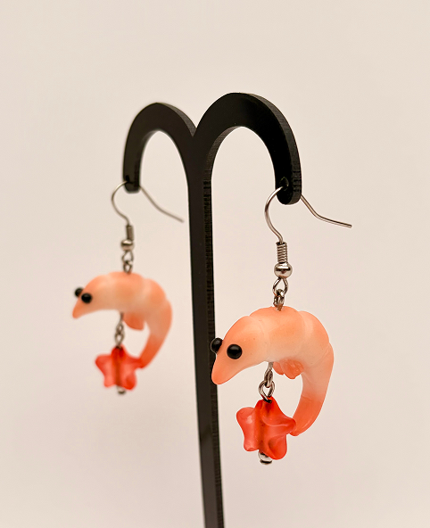
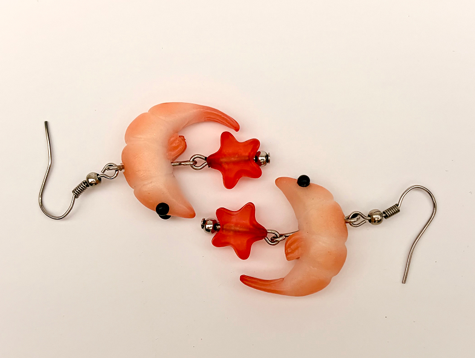
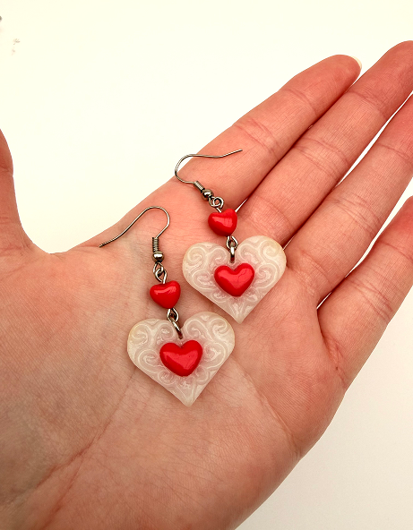
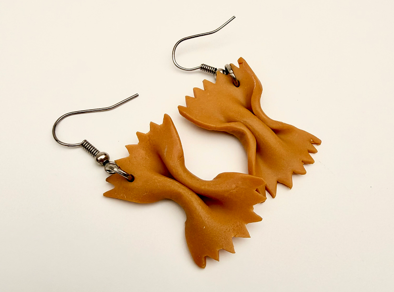
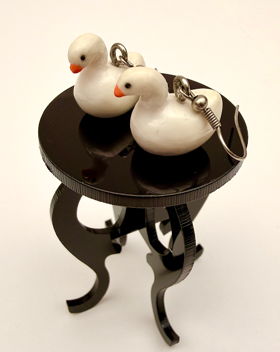
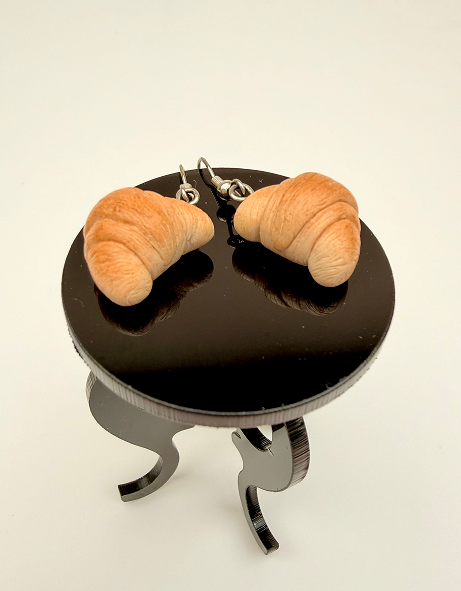
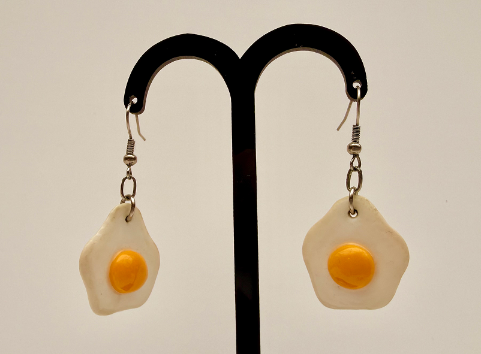
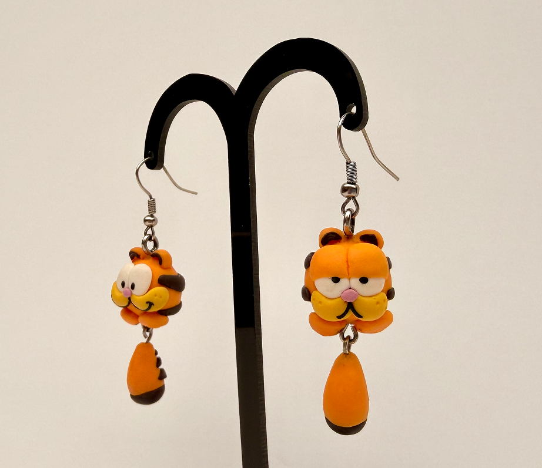
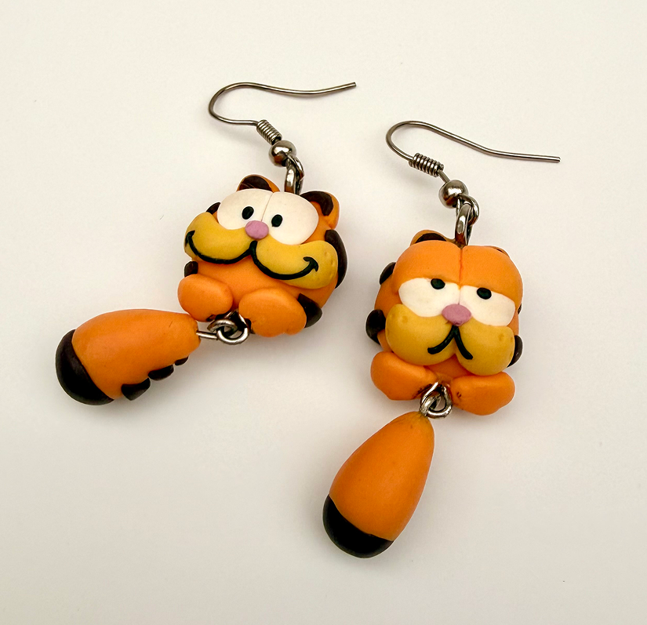

Aritos Modelados a Mano
Modelados en masilla polimérica FIMO
Aretes miniatura modelados a mano a partir de masa polimérica FIMO de secado al horno. Pintados o decorados con tizas pastel y recubiertos de barniz FIMO o resina UV.
Aretes miniatura modelados a mano a partir de masa polimérica FIMO de secado al horno. Pintados o decorados con tizas pastel y recubiertos de barniz FIMO o resina UV.








